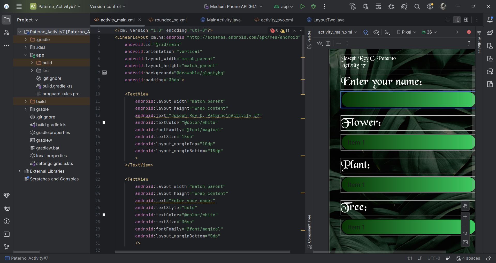
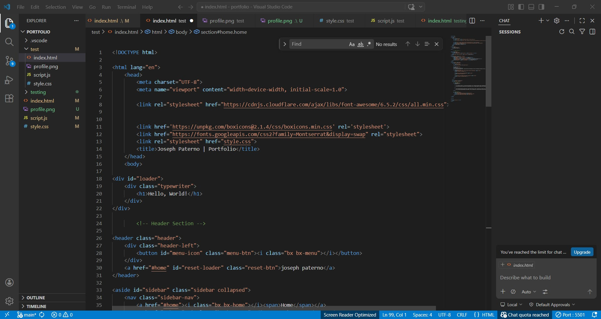
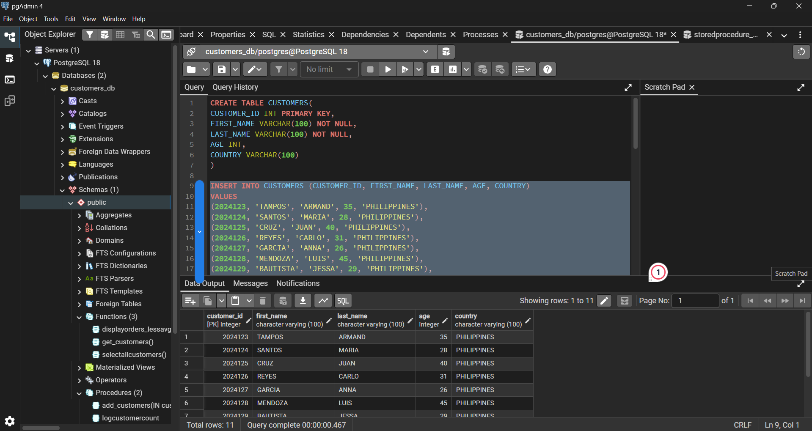

I am currently a second-year college student pursuing a BSIT degree at St. Dominic College of Asia (2026). I love to continuously hone my knowledge and skills in programming by challenging myself with various school projects and learning how to use and navigate through new technologies. I am passionate about web development and my dream is to become a successful full-stack web developer in the future. My hobbies are playing the guitar, playing online games, and biking outdoors.
Through my academic projects during this second-year of college, I have developed many Android applications using Android Studio, where I learned how to design user interfaces and implement functionality in mobile applications. I also have some prior experiences in database management using PostgreSQL and pgAdmin, where I gained knowledge in database design, data querying, and even making my own database applications using Apache Netbeans. Additionally, I am continuously leveraging and learning how to use VSCode as a beginner, and I have worked on this web developer portfolio project, and through this major project, I have learned how to use HTML, CSS, and JavaScript to create responsive and interactive web portfolio.


